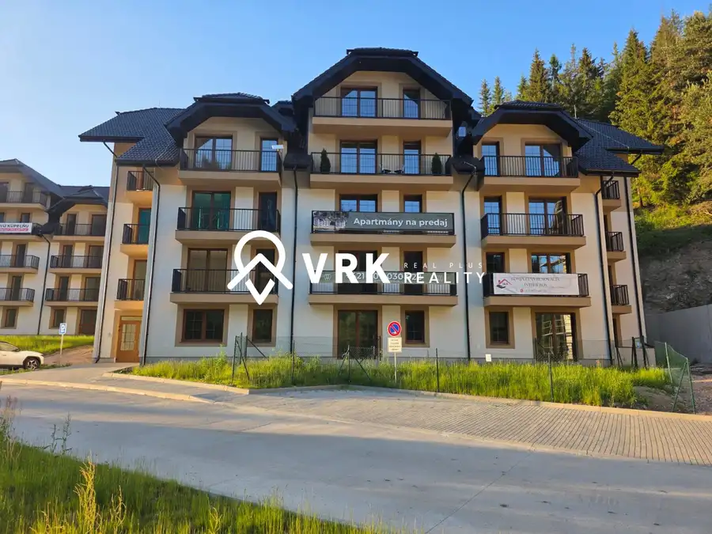
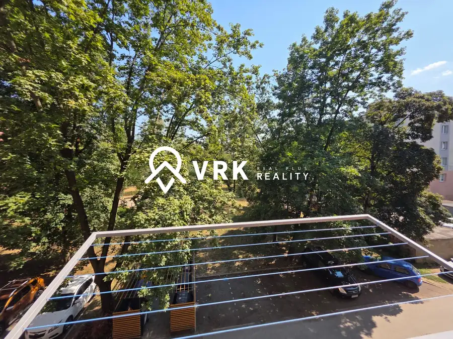

Šikovný 2,5 izbový byt po Rekonštrukcii, Košice - KVP
mestská časť Sídlisko KVP, Košice
- Dispozícia3-izbový
- Plocha55 m²
- Poschodie6. z 8
- Stavúplne prerobený
- Vlastníctvoosobné
O nehnuteľnosti
Ponúkame na predaj vkusne zrekonštruovaný 2,5-izbový byt na ulici Stierova v Košiciach – sídlisko KVP. Pôvodne 2-izbový byt prešiel v roku 2020 kompletnou rekonštrukciou, pri ktorej bol priestor maximálne efektívne využitý, vďaka čomu vznikol praktický 2,5-izbový byt, ideálny pre mladú rodinu, pár alebo jednotlivcov hľadajúcich komfortné bývanie bez ďalších investícií.
Základné informácie:
Výmera bytu: 55 m²
Poschodie: 6./8
Loggia s príjemným výhľadom na Myslavu
K bytu prislúcha pivnica
Zateplený bytový dom
Nový výťah
Klimatizácia
Bezproblémové parkovanie v okolí bytového domu
Rekonštrukcia a vybavenie:
Byt prešiel v roku 2020 kompletnou a vkusnou rekonštrukciou a predáva sa kompletne zariadený, s výnimkou detskej izby. Novým majiteľom tak ponúka možnosť okamžitého nasťahovania bez ďalších starostí.
Súčasťou vybavenia sú:
kuchynská linka so vstavanými spotrebičmi:
umývačka riadu,
indukčná varná doska,
teplovzdušná rúra,
mikrovlnná rúra,
chladnička s mrazničkou,
automatická práčka a sušička bielizne,
kompletné zariadenie bytu (okrem detskej izby).
Lokalita:
Sídlisko KVP patrí medzi vyhľadávané lokality vďaka výbornej občianskej vybavenosti a množstvu zelene. V pešej dostupnosti do 100 metrov sa nachádza:
obchod Agromilk,
Základná škola Drábova 3,
zimný štadión Aréna Sršňov.
Výhodou je tiež dobrá dostupnosť do centra mesta, ktoré je vzdialené približne 10 minút autom.
Ak hľadáte moderné bývanie v príjemnej lokalite s kompletným zariadením a bez potreby ďalších investícií, tento byt je pripravený práve pre vás.
Pre viac informácií alebo dohodnutie obhliadky nás neváhajte kontaktovať.
V prípade záujmu o viac informácií alebo obhliadku ma neváhajte kontaktovať. Cena zahŕňa kompletný právny servis vrátane všetkých poplatkov a provízie realitnej kancelárie. Zabezpečíme bezpečný a bezstarostný priebeh celého obchodu.
Ing. Michal OPINA
______________________
Parametre
| Úžitková plocha | 55 m² |
|---|---|
| Poschodie | 6/vyššie poschodie |
| Počet poschodí | 8 |
| Počet izieb | 3 |
| Vlastníctvo | osobné |
| Stav | úplne prerobený |
| Lódžia | áno |
| Pivnica | áno |
| Výťah | áno |
| Parkovanie | verejné |
| Postavené z | panel |
| Zariadenie | zariadený |
| Zateplený objekt | áno |
| Klimatizácia | áno |
| Energetický certifikát | áno |
| Okná | plastové |
| Dátum zverejnenia | 15. 6. 2026 |
Kde to je
mestská časť Sídlisko KVP, Košice
Inzerát neuvádza presnú polohu, mapa ukazuje obec.
Otvoriť v mapáchMohlo by Vás zaujímať

Apartmány10 154 000 €3 izbový apartmán priamo pri svahu v Litmanovej Litmanová 3-izbový73 m²4. podlažie Hľadáte miesto na oddych v srdci prírody, ktoré môžete využívať pre vlastnú rekreáciu alebo ako investíciu na prenájom? Ponúkame Vám na predaj…
BytRezervované 165 000 €1 izbový byt, Hlinkova, Košice - Sever mestská časť Sever, Košice 1-izbový38 m²2. podlažie Exkluzívne Ponúkame Vám na predaj kompletne zrekonštruovaný 1-izbový byt na ulici Hlinkova 36, Košice – Sever, v jednej z vyhľadávaných a obľúbených…